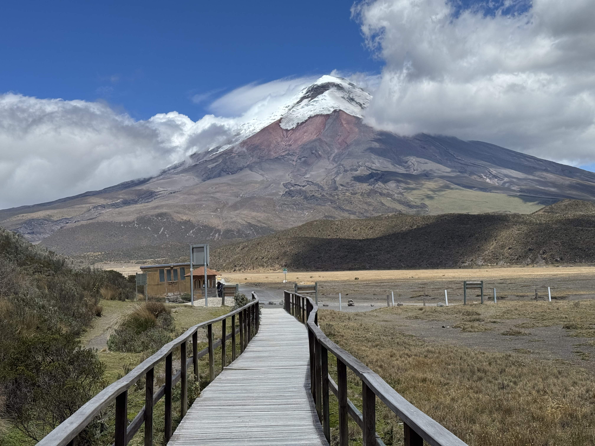

Environmental Compliance, Communities, and Decision-Making
In August 2026, I travelled to Ecuador with Acción Ecológica, a local environmental NGO. I partnered with the organization to accompany its training on closing and dismantling oil wells. The training combined classes at Ikiam, a public university near Tena in Ecuador’s Amazon region, with a visit to Bataboro, a Waorani community. The Waorani are an Indigenous people of the Ecuadorian Amazon, where oil extraction has shaped both the landscape and community life.
At Ikiam, we covered how oil wells are built and operated, how they are sealed to prevent leaks, and what happens to a site after production ends. Sessions also addressed cleanup, environmental restoration, and the costs of closing wells. Group discussions connected these technical topics to community participation, Indigenous rights, and the responsibilities of the state.
From Tena, we travelled to Coca, a city in the Ecuadorian Amazon, and then to Bataboro. The visit included a workshop on reparation and a visit to an oil well, with space to hear a Waorani elder’s account of the community before and after oil development. Spending time with the community added local context to the training and to my research on how environmental compliance and communities shape decisions about which wells are closed.


I also participated in FOSPA, the Pan-Amazonian Social Forum, in Coca. The forum brings together Indigenous peoples, community organizations, and others from across the Amazon to discuss the region’s social and environmental challenges. It gave me the chance to speak with more Indigenous leaders, policymakers, and people working on environmental issues.

A lot of learning, good conversations, and time in the Amazon. Pretty hard to beat!
All photographs in this fieldwork story were taken by me, Laura Elizabeth Moreno-Gama.